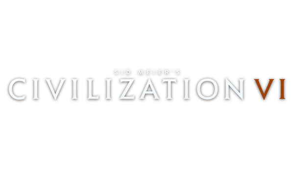
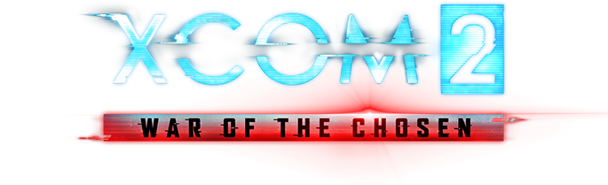

Стратегическая игра.
Игры данного жанра характеризуются тем, что игроку для достижения цели
необходимо применять стратегическое мышление, и оно
противопоставляется быстрым действиям и реакцией.
| Название игры |
Логотип |
Описание |
| Sid Meier’s Civilization V |
 |
Пятое воплощение легендарной «Цивилизации».Провести свою нацию
через века — от первобытного общества к высокотехнологичной цивилизации,
пережить золотой век и встать у истоков мировых религий, изобрести колесо
и атомный реактор, построить Пирамиды и Статую Свободы, встретиться
с величайшими политическими лидерами, проявить себя в роли дипломата
или стратега — Sid Meier’s Civilization V позволит воплотить в жизнь ваши мечты!
|
| Total War: Rome II |
|
Total War: Rome II - масштабная стратегия на новом движке,
который позволит отображать на экаранах игроков десятки тысяч юнитов.
Игровой сеттинг отправляет игроков в Древний Рим, продолжая сюжет
оригинального Rome: Total War. В игре доступно 117 фракций,
однако играть можно только девятью (без учета дополнительного контента)
из них. Разработчики обновили "систему провинций", улучшили и обновили
экран сражений, ввели совершенно новые виды юнитов, и многое другое.
В целом, геймплейная часть осталась без изменений - разработчики
просто улучшили и отполировали все элементы, которые нуждались в этом.
|
| XCOM 2 |
 |
В XCOM 2 мы впервые действуем в ситуации, когда инопланетяне не
просто вторглись на Землю — они победили, Мировой Совет распустили, а
организацию XCOM закрыли. При этом «чужие» не уничтожили всё живое, а
явно задумали какую-то гадость. При поддержке продавшихся или подконтрольных
им политиков они строят антиутопическое общество, в котором якобы искоренены
бедность, преступность и болезни, а взамен повсюду насаждаются слежка и тотальный
контроль. И только бывшие руководители XCOM знают, что инопланетяне скрывают свои
истинные, весьма зловещие, цели. Поэтому они подпольно возрождают организацию
и начинают полномасштабную партизанскую войну.
|
 Стратегия
Стратегия